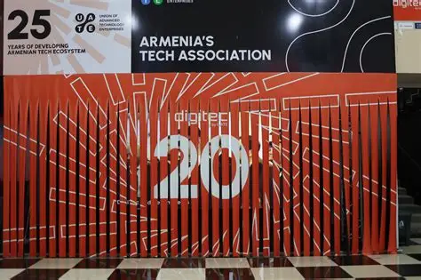
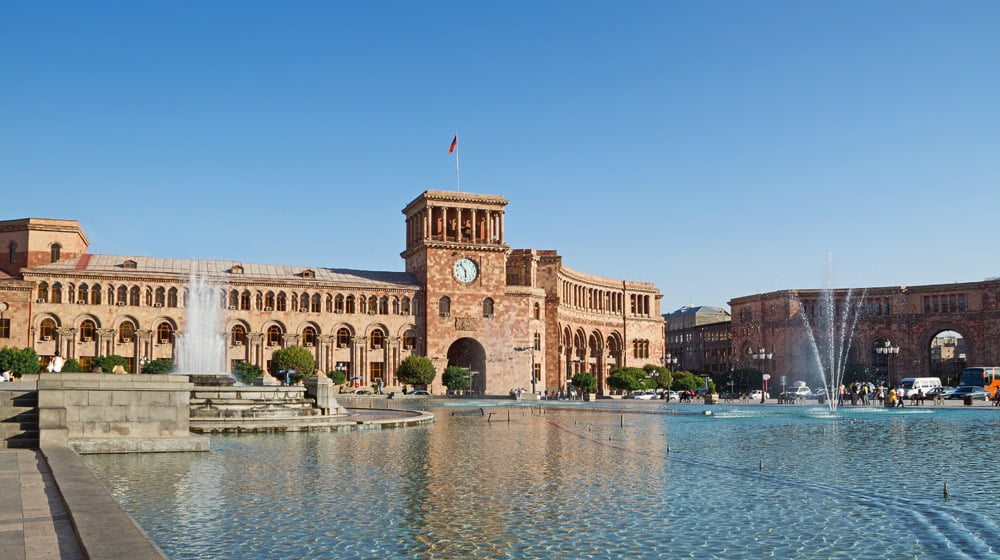

Երևան 2807-ամյակ
Երևանը այս տարի նշում է իր 2807-ամյակը՝ հոկտեմբերի 12-ին:
Այդ կապակցությամբ անցկացվում են լայնածավալ տոնական միջոցառումներ՝
սկսած վաղ առավոտից մինչև գիշեր։ Դրանց թվում՝ բացօթյա համերգներ,
մշակութային փառատոններ, արվեստի ցուցահանդեսներ և քաղաքային միջոցառումներ։

Նոր Iphone 17 pro
Apple-ը պաշտոնապես ներկայացրել է iPhone 17 Pro մոդելը, որն ունի թափանցիկ
էկրան և ներկառուցված արհեստական ինտելեկտի օգնական՝ “Vision AI” ։Նոր սարքը կթողարկվի
հոկտեմբերին և կարժենա մոտ $1299:

Դիջիթեք 2025
Հոկտեմբերի 10-12-ը Երևանում անցկացվել է «Դիջիթեք 2025» տեխնոլոգիական ցուցահանդեսը,
որտեղ ներկայացվել են արհեստական բանականություն, վիրտուալ իրականություն և սմարթ
սարքեր։ Միջոցառմանը մասնակցել են տեղական և միջազգային ընկերություններ։
Հայաստան-Հունգարիա
Հոկտեմբերի 11-ին կայացած ԱԱ-2026-ի ընտրական փուլի երրորդ տուրի խաղում Հայաստանի
ազգային հավաքականը Բուդապեշտում 0:2 հաշվով պարտվել է Հունգարիային։ Առաջին խաղակեսը
ավարտվել էր 0:0 հաշվով, սակայն երկրորդ կեսում հունգարացիները երկու գոլ խփեցին և
ապահովեցին հաղթանակը։
